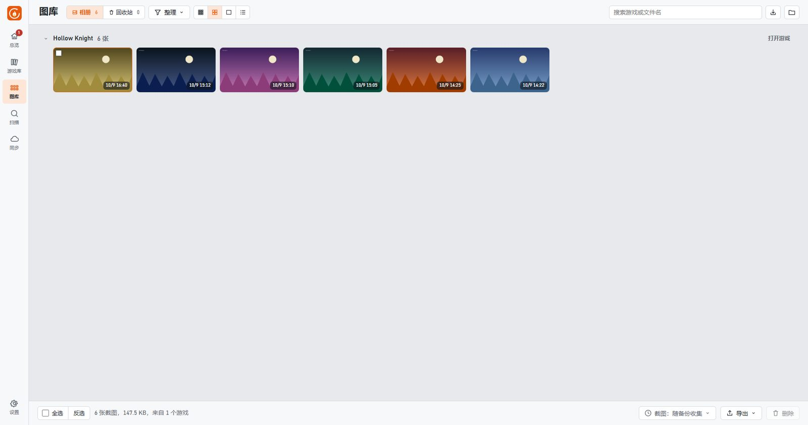
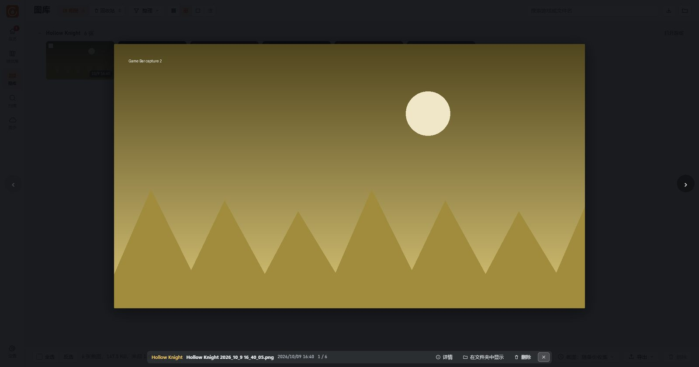

2026-10-11 · 用户已全部确认，0.4.1 实现（图库列表的缩进实际为 24 px，使勾选框与游戏名对齐）。逐页检查后只修问题、不改风格（颜色、字体、圆角、布局结构都保持不变）。左边是现在的界面，右边是改后的效果——改后截图是把下面 7 处样式临时加到同一个测试实例上截的，和最终效果一致。编号 1–7 是各页通用的问题，G1–G5 是图库专门的问题。点图片可以看大图。
| # | 问题 | 改法 |
|---|---|---|
| 1 | 导航栏中当前在哪一页只靠图标变色，不明显 | 当前页加淡色底、文字加粗 |
| 2 | 扫描页顶部栏比其他页矮，切换页面时标题会跳动 | 各页顶部栏统一高度 |
| 3 | 游戏库、图库的搜索框铺满整行，宽屏时很长 | 固定 360 px，靠右放 |
| 4 | 游戏库宽屏时名称与右边三列之间空一大段，右边三列挤在一起 | 四列按比例分配宽度；说明文字略放大 |
| 5 | 设置页在宽屏拉满整屏，仓库位置输入框有 1500 px 长 | 内容限制在 1080 px 并居中 |
| 6 | 扫描页空状态的说明被挤成很窄的一列 | 按正常宽度换行，标题加粗 |
| 7 | 同步页每个目标都有橙色“立即同步”，和“添加同步目标”抢视线 | 目标上的“立即同步”改为次要按钮（悬停时变橙色） |
| G1 | 图库每个分组标题旁都有“全选 / 反选”，没勾选时也一直显示，分组多时很杂 | 平时隐藏；悬停标题、这一组有勾选或已折叠时才显示 |
| G2 | 鼠标停在缩略图上没有反馈（只出现一个很小的勾选框） | 悬停时出现淡色描边 |
| G3 | 列表视图中文件名列很宽却留白，“来源”列太窄，“Windows 游戏栏截图”折成两行 | 文件名列更宽，短字段不换行 |
| G5 | 缩略图和分组标题的展开箭头左对齐，看起来不协调 | 缩略图与列表向右缩进 37 px，与游戏名对齐；折叠后的分组不变 |
| G4 | 查看大图时上一张 / 下一张只是贴在窗口边上的细箭头，不容易看到和点到 | 圆形半透明按钮，离图片更近 |


确认后把这 12 处合并进样式表（同时检查暗色主题与窄窗口），并在隔离实例中逐页再截一次图核对。想去掉或调整其中某几处，告诉我编号即可。